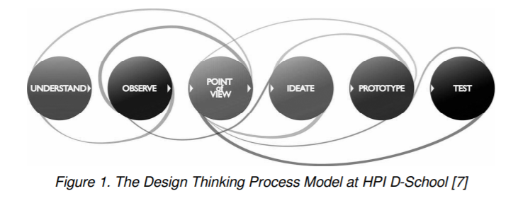

In dit artikel wordt aan de hand van wetenschappelijke artikelen en onderzoeksinstanties onderzoek gedaan naar het begrip co-design. Daarnaast worden andere manieren van design uitgelicht.
Het lectoraat Co-Design (z.d.) van de Hogeschool Utrecht geeft de volgende definitie van co-design: 'Co-design bied een aanpak die inzichten in de context van de mensen verbindt met technologische mogelijkheden'. Co-design staat voor collaborative of cooperative design. Hiermee wordt bedoeld dat er door verschillende partijen met elk zijn eigen expertise of inzicht naar een probleem wordt gekeken om een passende oplossing hiervoor te vinden. Door samen met ieder zijn inzicht of expertise naar dit specifieke probleem te kijken wordt het mogelijk gemaakt om samen tot een (technologische) innovatie(s) te komen (Codesign, z.d.).
Het begrip co-design begint steeds populairder te worden, wanneer je het begrip zoekt op google krijg je alleen al 13.110.000.000 resultaten. Wanneer je het begrip zoekt op Google Scholar krijg je 189.000 resultaten. Dit in vergelijking met 2007: Google 1.700.000 resultaten en Google Scholar 11.800 resultaten (Sanders & Stappers, 2007).
Co-design wordt vaak verward met co-creation of mensen denken dat het het zelfde is. Co-creation wordt gezien als elke creatieve samenwerking tussen twee of meer mensen. Dit kan dus op elk gebied zijn. Co-design is een gedeelte van co-creation, het betreft het ontwerpproces waar getrainde en ongetrainde mensen samen aan werken. Het richt zich dus meer op het daadwerkelijke ontwerpproces (Sanders & Stappers, 2008). Een praktijkvoorbeeld van co-creation zijn Youtube en Wikipedia, dit zijn platformen waar mensen informatie en content voor elkaar kunnen maken. Echter wanneer Youtube zijn website wilt verbeteren en de gebruikers hiervoor meerdere malen om hun mening vraag over het uiterlijk van de website is het weer co-design (Nina, 2015).
Vraagstukken
Co-design is op erg veel vraagstukken toepasbaar, zolang je maar goed genoeg zoekt naar de juiste partner(s) om samen mee te werken. Echter voor zeer specifieke projecten waarbij echt maar vanuit 1 invalshoek gekeken kan worden is co-design niet mogelijk. Youtube is net genoemd als voorbeeld. Het is belangrijk dat co-design en co-creation niet door elkaar gehaald worden.
Het grootste verschil tussen co-design en design/system thinking is dat bij design thinking en system thinking, zoals het woord al zegt, het erg procesmatig verloopt (Learning for sustainability, z.d.). Er zijn 6 verschillende stappen die belangrijk zijn in dit proces. Deze stappen zijn te vinden in figuur 1 (Thoring & Müller, 2011).

Om een Smart co-design te krijgen is het belangrijk om samen met andere te werken om een probleem op te lossen, net zoals bij een co-design. De focus moet hierbij extra liggen op technologische ontwikkelingen en innovaties. Het is van belang dat je samenwerkt met de betrokkenen en de eventuele gebruiker van het probleem (Kudo, 2016).
Co-design is het samenwerken met verschillende expertises en gezichtspunten om een (innovatieve) oplossing te vinden voor een probleem. Co-design kun je laten vallen onder co-creation, dit is het alles omvattende begrip van creatieve samenwerking van twee of meer mensen. Co-design richt zich meer op het ontwerpproces. Smart co-design is de samenwerking tussen verschillende partijen om op een innovatieve manier met technologische producten een innovatieve oplossing te vinden voor problemen.
Interview vragen:
Wat vind jij de meest interessante co-design?
Wat is volgens jou het verschil tussen co-design en co-creation?
Codesigners.nl. (z.d.) Over het lectoraat Co-Design. (Hogeschool Utrecht). Geraadpleegd op 26 september 2020, van https://codesigners.nl/
Kudo, H.. (2016, 16 Juni). Co-design, Co-creation, and Co-production of Smart Mobility Systems. Geraadpleegd op 26 september 2020, van https://link.springer.com/chapter/10.1007/978-3-319-40093-8_54
Learningforsustainability.com. (z.d.) Design thinking and co-design. Geraadpleegd op 26 september 2020, van https://learningforsustainability.net/design-thinking/
Nina. (2015, 16 juni). Een introductie van Co-design en Co-creation. Geraadpleegd op 26 september 2020, van http://studio22eight.nl/een-introductie-van-co-design-en-co-creation/
Sanders, E. & Stappers, P. J. (2008, 24 Juni). Co-creation and the new landscapes of design. Geraadpleegd op 26 september 2020, van https://www.tandfonline.com/doi/full/10.1080/15710880701875068
Thoring, K. & Müller, R. M.. (2011, 9 september). Understanding Design thinking: A process model based on method engineering. Geraadpleegd op 26 september 2020, van https://www.designsociety.org/publication/30932/Understanding+Design+Thinking%3A+A+Process+Model+based+on+Method+Engineering
De kwaliteit van het ingeleverde werk wordt beoordeeld aan de hand van de volgende criteria:
De kwaliteit van het kennismateriaal is getoetst volgens de volgende criteria:
- Betrouwbaarheid uitgever
- Aantal citaten
- Datum van publicatie
Ik ben begonnen door op het reguliere google 'Co-design' te zoeken. Hiervoor heb ik gekozen zodat ik een eenvoudige uitleg krijg van het begrip. Om de informatie over de uitleg van dit begrip betrouwbaar te hebben heb ik gekozen voor de site codesigners.nl, deze site is onderdeel van het lectoraat Co-design van de Hogeschool Utrecht.
Om meer inhoudelijke informatie te vinden ben ik opzoek gegaan via Google Scholar. Ik heb verschillende zoektermen gebruikt zoals: Co-design, co-creation, system thinking, design thinking, smart co-design, industry 4.0 co-design en industry 5.0 co-design.
Daarnaast heb ik tussen de literatuurlijst gekeken van de gebruikte bronnen om nog meer informatie te vergaren.
Om de bruikbaarheid van de bronnen te bepalen heb ik de volgende selectiemethode gebruikt:
- Samenvatting lezen
- Globaal door het artikel lezen
- Door middel van de zoekfunctie belangrijke trefwoorden zoeken
Om de betrouwbaarheid van de artikelen te controleren heb ik gekeken naar:
- Instantie/auteurs
- Belangen van instantie/auteurs, waarom is dit artikel geschreven?
- Datum van publicatie
Ik heb Luuk en Nick hun stuk gereviewed. Dit hebben zij ook voor mij gedaan. Als eerste is de feedback op mijn stuk te vinden, vervolgens is de gegeven feedback te vinden.
Algemeen:
Gebruik bronvermelding bij de vergelijking met zoekresultaten uit 2007.
Goed het verschil tussen co-design en co-creation uitgelegd met een duidelijk voorbeeld.
In figuur 1 staan 6 stappen, maar je schrijft 5 op. Ik zou dit nog even veranderen.
Duidelijke conclusie. Klopt het dat je bedoeld dat er vanuit verschillende gezichtspunten gewerkt wordt?
Prima onderzoek. Ik zou nog wel even de bronnenlijst op alfabetische volgorde zetten.
Zoekstrategie, bepaling bruikbaarheid en selectiemethode.
Je beschrijft duidelijk je zoekstrategie. Ook slim dat je bij de literatuurlijsten kijkt van je gebruikte bronnen om zo vergelijkbare bronnen te kunnen vinden.
Je beschrijft je selectiemethode, maar past hem vervolgens niet toe op je artikelen. Wellicht kan je hier kort noteren wat de resultaten zijn van je selectiemethode op je gebruikte bronnen.
Algemeen:
Tekst is prima te lezen. Soms wordt er net iets teveel spreektaal gebruikt.
De verwijzing naar je figuur is niet correct conform APA normen. "... in het onderstaande figuur' wordt dan' '... op Figuur 1'.
Dit boekje gebruikt de HAN als APA bijbel: https://www.auteursrechten.nl/files/auteursrechten/2019-09/surf_de-apa-richtlijnen-uitgelegd_versie-november-2018.pdf.
Kwaliteit kennismateriaal:
Er staat een bron tussen, (Nina, 2016), wat eigenlijk een soort blog is van een bedrijf. De informatie klopt waarschijnlijk wel gewoon, maar een wetenschappelijk artikel is beter voor de betrouwbaarheid.
Kwaliteit zoekstrategie:
Misschien had je eerst alleen op Google Scholar kunnen zoeken en als daar niets uit komt pas naar de reguliere Google overstappen.
Misschien had je kunnen definiëren welke zoekwoorden je precies hebt gebruikt om de herhaalbaarheid van je onderzoek te verbeteren.
Kwaliteit bruikbaarheid en selectiemethode:
Specificeren wat volgens jou de betrouwbaarheidscheck is.
Reviewer: Job
Per onderdeel zullen er tips gegeven worden om het artikel naar een hoger niveau te tillen.
Het eerste dat mij opvalt is dat op je voorblad staat: Wat is co-creatie? In je inleiding herhaal je dat dit onderzoek over co-creatie gaat. Ik dacht echter dat het onderzoek hoofdzakelijk ging over co-design. En dat co-design en co-creatie veel met elkaar te maken hebt klopt, maar volgens mij was de bedoeling dat dit onderzoek hoofdzakelijk over co-design gaat.
Als tip voor de onderzoekstrategie wil ik je mee geven om ook tussen de bronnenlijsten van de door jou gebruikte bronnen te kijken. Hier staan vaak ook erg interessante bronnen die vaak wat dieper in gaan op een onderwerp. Daarnaast denk ik dat de zoektermen als 'smart', 'industry 4.0' en 'industry 5.0' een toegevoegde waarde zullen hebben voor je artikel. Een van de vragen is namelijk wat is Smart co-design?
Bruikbaarheid en selectiemethode
Ik vind dat je goed onderbouwd waarom je niet voor datum van publicatie filter hebt gekozen. Om de bruikbaarheid van een artikel te bepalen kun je ook gebruik maken van de zoekfunctie, typ hier voor jou relevante termen in om te kijken of ze terug komen in het artikel. Dan kun je globaal rond die termen lezen om te kijken of het bruikbaar is.
Je begint heel logisch en goed met de uitleg van wat is co-design. Daarna stel je de vraag: welke positie heeft co-creatie ten opzichte van co-design. Ik zou deze vraag echter andersom stellen, aangezien dit onderzoek voornamelijk moet gaan over co-design en co-creatie maar een gedeelte van t onderzoek is.
Je geeft een goed voorbeeld van co-design, dit helpt om het begrip beter te begrijpen.
Typfoutje: co-design kan in veel verschillende... ipv ik.
Ik mis wel het stukje over Smart Co-design, dit is onderdeel van de opdracht en ik zou je aanraden dit nog toe te voegen.
Daarnaast vind ik dat je een goed leesbaar en interessant stuk hebt geschreven.
Peer review Luuk
Reviewer: Job
Per onderdeel zullen er tips gegeven worden om het artikel naar een hoger niveau te kunnen tillen.
- Onderzoeksaanpak
Je zou je zoektermen nog kunnen uitbreiden of breder kunnen maken. Denk bijvoorbeeld aan industry 4.0 of 5.0 in plaats van Smart Industry. Daarnaast vind je vaak interessante bronnen tussen de literatuurlijsten van gevonden bronnen. In deze bronnen gaan ze vaak dieper op het onderwerp in waarover geciteerd is.
- Co-design vs co-creatie
Ik snap niet helemaal waarom je hier de uitleg van de keuze voor deze bron hebt neer gezet. Dit lijkt me niet een stuk voor in je artikel? Maar juist bij de onderzoeksverantwoording(die beoordelingscriteria) .
- Vraagstukken
Je geeft aan dat co-design bij veel verschillende dingen gebruikt kan worden, zoals bijv. om klimaatverandering tegen te gaan. Misschien dat je wat beter kunt uitleggen waarom je dit voorbeeld geeft en waarom dit dan juist gebruikt kan worden?
Je hebt nog niet aangegeven hoe je de kwaliteit van je bronnen hebt beoordeeld, op die van Sanders & Stappers na dan. Dit geld ook voor de bruikbaarheid en selectiemethode.